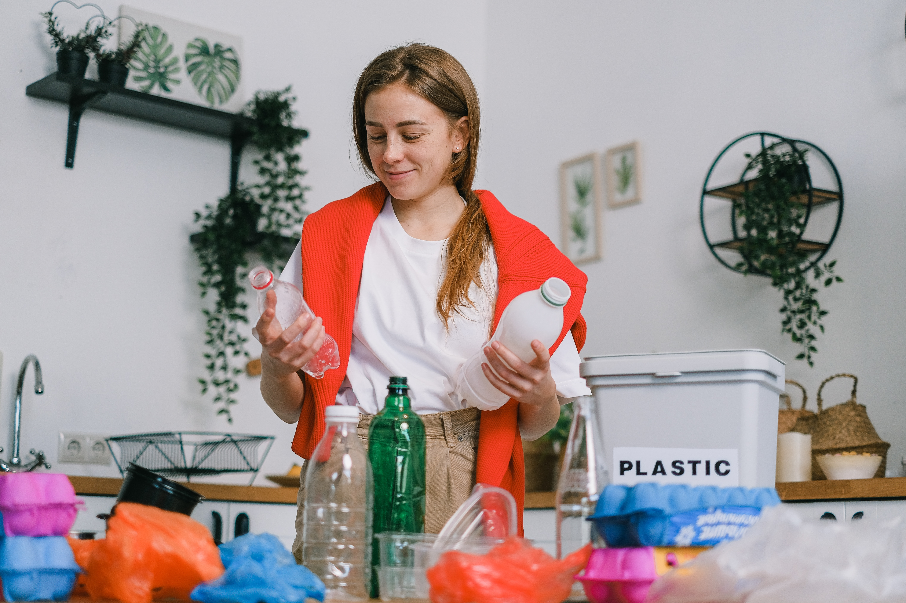

Hành động để bảo vệ môi trường
Giảm thiểu sử dụng các sản phẩm nhựa: Sử dụng túi vải thay cho túi nhựa, sử dụng bình nước thủy tinh hoặc thép không gỉ thay cho các loại bình nước nhựa, sử dụng các sản phẩm có thể tái sử dụng và tái chế được.
Bảo vệ các khu rừng và động vật hoang dã: Hạn chế đốt rừng, phát triển các khu bảo tồn thiên nhiên, bảo vệ các loài động vật hoang dã, đặc biệt là những loài có nguy cơ tuyệt chủng.

Chúng ta có thể thực hiện nhiều hành động nhỏ trong cuộc sống hàng ngày để góp phần bảo vệ môi trường. Hãy tắt đèn khi không sử dụng, giảm thiểu sử dụng túi nilon, sử dụng phương tiện giao thông công cộng, tắt máy tính khi không sử dụng, và nhiều hành động khác nữa.